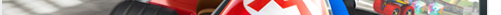
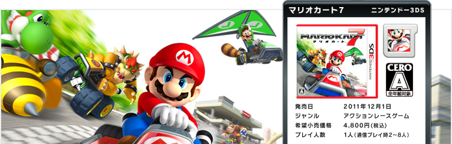
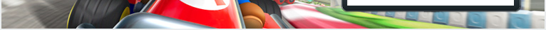
1. 『マリオカート７』プレイレポート（その1）

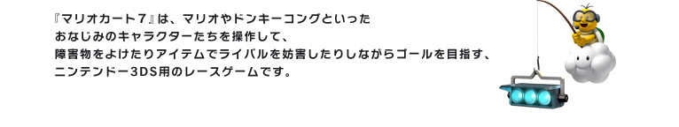
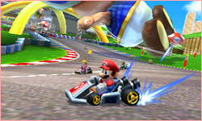
おなじみのシリーズなので説明は不要かもしれませんが、『マリオカート』シリーズは、いろいろなアイテムをうまく使えば、それほど腕に自信がなくてもレースやバトルに勝てるのが最大の特徴です。
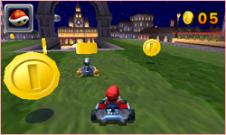
1人用のゲームモードには「グランプリ」「タイムアタック」「ふうせんバトル」「コインバトル」の4種類があり、単に速さを競うレースだけでなく、さまざまな遊び方ができるようになっています。それぞれのモードで、速く走れるよう練習したり、自分なりの戦術を考えたり、遊びごたえもたっぷりです。
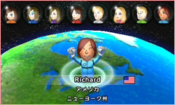
近くの人との通信はもちろん、インターネット通信でも、最大8人で対戦できます。また、ニンテンドー3DSならではの「すれちがい通信」や「いつの間に通信」で他のプレイヤーと交流できます。この年末年始と言わず、もっともっと長いスパンでもじっくり遊べそうです。
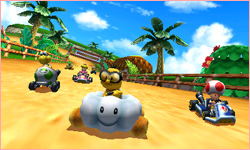
『マリオカート７』では、まったく同じカートに乗っていても、キャラクターによって、スピードや重さが異なります。
どのキャラクターを使うか迷っても、実際にプレイしたときの操作のしやすさや、見た目がカッコいい・かわいいと思うキャラクターを選べばOKです。
どのキャラクターを使うか迷っても、実際にプレイしたときの操作のしやすさや、見た目がカッコいい・かわいいと思うキャラクターを選べばOKです。
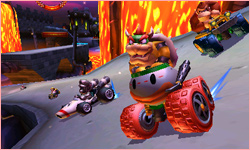
たとえば、筆者はスピードが速くて声（？）が面白いのでクッパをメインで使っていますが、クッパは最高速度に達するまで時間がかかります。直線的で最高速度で走れる距離が長いコースに向いていますが、曲がりくねっていたり、障害物が多いコースでは、なかなかスピードを出すのが難しいです。とはいえ、そういった弱点は「カートのカスタマイズ」で補うことができます。
したがって、対戦プレイの際には、コースや戦術、相手の選んだキャラクター、そのときの気分などを総合して、キャラクターを選べばよいでしょう。もちろん練習すれば、クッパでもコーナーが多いコースを速く走れます。お気に入りのキャラクターがいるなら、いつも同じキャラでじっくり練習する、というのも上達が早くなるのでオススメです。
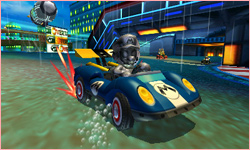
『マリオカート７』では、これまでのシリーズに登場したキャラクターたちに加えて、「メタルマリオ」をはじめ、たくさんの新キャラが登場します。また、『Miiスタジオ』で作成した自分のMiiを選んでマリオたちと一緒に走ることも可能です。
これらのキャラクターは、一部が隠しキャラクターになっていて、「グランプリ」でカップ戦に優勝してを勝ち進むことで選べるようになります。
これらのキャラクターは、一部が隠しキャラクターになっていて、「グランプリ」でカップ戦に優勝してを勝ち進むことで選べるようになります。
また、みんなと「グランプリ」の対戦をプレイして優勝することでも選べるようになります。一人でも、みんなでも、ドンドン「グランプリ」に挑戦しましょう！
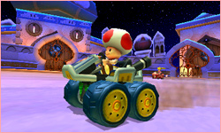
『マリオカート７』には、これまでのシリーズに登場したおなじみのコースに加えて、新しいコースもたくさん登場します。まず「グランプリ」や「タイムアタック」で選べるコースが全部で32コース、「ふうせんバトル」や「コインバトル」で選べるのが全部で6コースあり、これらのうちの半分が新コースです。
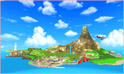
新コースで特に目を引くのは「ウーフーアイランド」です。『Wii Fit Plus』や『Wii Sports Resort』、N.O.Mでもご紹介した『パイロットウイングス リゾート』などで登場したあの島です。通常は同じコースを3周走ればゴールですが、「ウーフーアイランド」はとても長いコースになっていて、1周すればゴールになります。
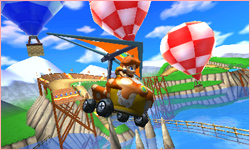
また、『マリオカート７』では、海中に潜ってスクリューで進んだり、ジャンプ台から飛び出してグライダーで滑空することもできるようになりました。つまり、これまでのシリーズに登場したコースの入れなかったところも走れてしまうのです。見慣れたコースでも、タイムを短縮できる新しいショートカットを発見することができるでしょう。
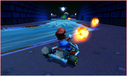
コース上にある「アイテムボックス」で入手できるアイテムも、これまでのシリーズに登場したものに加えて、3つの新アイテムが追加されています。「ファイアフラワー」と「スーパーこのは」と「ラッキー７」です。
「ファイアフラワー」は、ファイアボールを連続で投げられるアイテムです。「スーパーこのは」は、たぬきのしっぽを振り回して攻撃や防御に使えます。
「ファイアフラワー」は、ファイアボールを連続で投げられるアイテムです。「スーパーこのは」は、たぬきのしっぽを振り回して攻撃や防御に使えます。
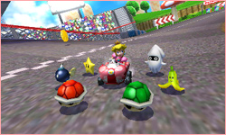
「ラッキー７」は、7つのアイテムが一気にそろうので強力ですが、うまく使えず逆効果になってしまうこともあります。まさにその名のとおり運次第なので、諸刃の剣かもしれません。
『マリオカート７』では、練習してコースを覚えたりすることと同じか、それ以上に、アイテムの使い方が大きく勝敗を分けます。どんなときにアイテムを使えば効果的なのか、レース展開を読んで、その場で瞬間的に判断する必要があります。
『マリオカート７』では、練習してコースを覚えたりすることと同じか、それ以上に、アイテムの使い方が大きく勝敗を分けます。どんなときにアイテムを使えば効果的なのか、レース展開を読んで、その場で瞬間的に判断する必要があります。
どのアイテムが出るかは運ですが、下位のプレイヤーほど強力なアイテムが出ることが多くなっているので、いつも逆転の可能性があります。そこが、『マリオカート７』の面白いところです。できるだけ先行して逃げきるのか、後ろからついていって逆転を狙うのか。実戦を重ねて巧妙な戦術を考えるのも醍醐味です。
冬休みを楽しく過ごせる！ソフト大特集
1. 『マリオカート7』プレイレポート（その1）
2. 『マリオカート7』プレイレポート（その2）
3. ニンテンドー3DSの注目作をピックアップ
4. Wiiの注目作をピックアップ